ناوران پیشرو در ارائه خدمات

ناوران پیشرو در ارائه خدمات
اخبار و مجلات ناوران
معرفی ماشین های لامبورگینی محبوب تاریخ
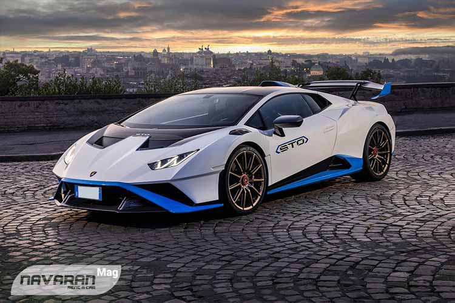شرکت ایتالیایی لامبورگینی یکی از سازندگان مشهور خودروهای سوپراسپرت در جهان است که
فعالیت
خود را از سال 1963 میلادی آغاز کرد. طی اینها میتوان گفت که هر ماشین لامبورگینی استاندارد جدیدی از
یک
خودرو سوپراسپرت دیوانهوار را برای دیگر شرکتها تعیین کرد و به نوعی اغلب محصولات این کمپانی بزرگ،
آغازگر خط مشی جدیدی برای دنیای خودرو بود. به همین خاطر است که خودرو دوستان با عشق و علاقه اخبار
مرتبط
با جدیدترین محصولات لامبورگینی را دنبال میکنند.
داستان تولید نخستین خودرو لامبورگینی و تاسیس این شرکت نیز در نوع خود جالب است. تمامی فلسفه تاسیس
لامبورگینی و تولید خودرو توسط این شرکت به رقابت و خصومت شخصی بین انزو فراری و فروچیو لامبورگینی باز
میگردد. خصومت فروچیو لامبورگینی با فراری و خودروهایش، سبب شد تا لامبورگینی طی مدت کوتاهی به جایگاهی
شاخص در صنعت خودروسازی برسد و عکس ماشین لامبورگینی به پوستر ثابت اتاقهای نوجوانان بدل شود. جالب است
بدانید که لامبورگینی پیش از تولید خودروهای سوپر اسپرت، تراکتور و خودروهای کشاورزی تولید میکرد. شاید
به همین دلیل است که خودروهای لامبورگینی تا این حد عجیب و البته دوستداشتنی هستند. در ادامه این مطلب
از
مجله سایت اجاره خودرو ناواران با ما همراه باشید تا شما مخاطبین عزیز را با 10 ماشین لامبورگینی محبوب
در
تاریخ صنعت خودرو آشنا کنیم.
لامبورگینی کونتاش (Lamborghini Countach)
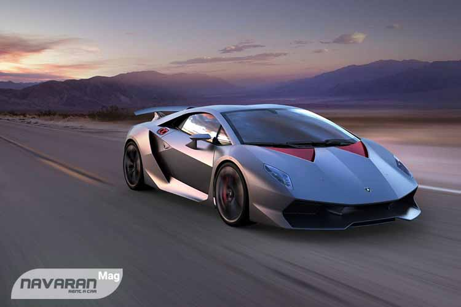لامبورگینی میورا خودرویی دوستداشتنی است و حتی ممکن است گرانترین ماشین جهان نیز لقب بگیرد اما اکثر
جوانان و بزرگسالان امروزی برند لامبورگینی را با مدل کونتاش به خاطر میآورند. عکس ماشین لامبورگینی
کونتاش طی دهههای 1980 و 1990 میلادی، زینتبخش اتاق خواب نوجوانان بود و به آنها برای رویاپردازی کمک
میکرد.
لامبورگینی کونتاش در نمایشگاه خودرو ژنو 1971 رونمایی شد و بهواسطه ظاهر دراماتیک خود، به سرعت مورد
توجه قرار گرفت. قدرت کونتاش از موتور V12 با توان 375 اسب بخار تأمین میشد. کونتاش برخلاف سوپر
اسپرتهای امروزی، چیزی بیش از یک خودرو نبود و همین مصالح موجب ماندگاری آن در اذهان مردم شده است.
لامبورگینی سستو المنتو (Lamborghini Sesto Elemento)
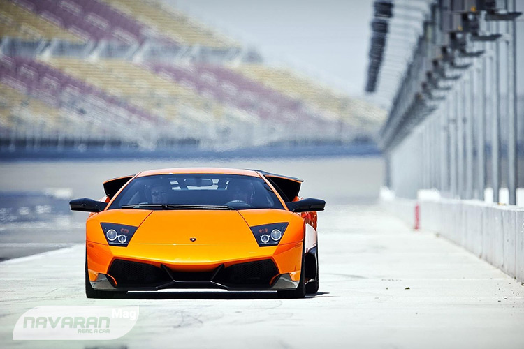سستو المنتو به زبان ایتالیایی معنای عنصر ششم جدول تناوبی را میدهد. عنصر ششم جدول تناوبی کربن است و
به دلیل استفاده بیحدوحصر از کربن در این ماشین لامبورگینی، نام آن را به این خودرو اعطا کردهاند.
لامبورگینی سستو المنتو به طور کامل از فیبرکربن ساخته شده است و به همین دلیل فوقالعاده سبک است. حتی
چرخها و شیشه جلو این خودرو نیز از کربن ساخته شدهاند که در نوع خود بینظیر است. این خودروی 999
کیلوگرمی، بهواسطه یک موتور 5.2 لیتری 10 سیلندر توان تولید 562 اسببخار قدرت را دارد. چنین قدرتی
باعث
شده است تا سستو المنتو به یک خودروی فوق سریع تبدیل شده و در کمتر از 2.5 ثانیه به سرعت 100 کیلومتر در
ساعت دست یابد. جالب است بدانید که این ماشین لامبورگینی از قیمتی در حدود 1.772 میلیون یورو برخوردار
است
و حدودا 170 هزار یورو گرانتر از بوگاتى ویرون محسوب میشود!
لامبورگینی هوراکان (Lamborghini Huracan)
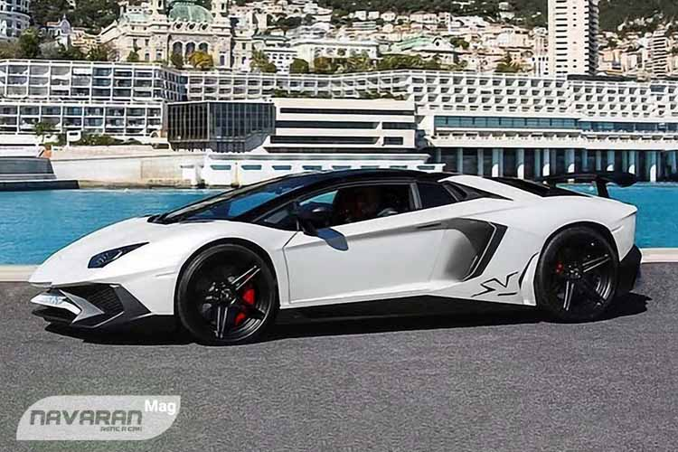قوانین سختگیرانه صنعت خودروسازی منجر به تولید اتومبیلهایی ایمن شده است. در سوی دیگر
این
قوانین خودروسازان را محافظهکار کردهاند و از این رو تعداد خودروهای دیوانهوار در مقایسه با دهههای
گذشته کاهش یافته است. با این حال یک ماشین لامبورگینی هرگز خشونت خود را از دست نخواهد داد، حتی اگر یک
گاو
وحشی ایمن باشد!
لامبورگینی هوراکان نمادی از یک خودرو مدرن و ایمن است که به طور همزمان میتواند دیوانهوار و خشن باشد.
هوراکان نام یک گاو مبارز است و علاوهبر آن لقب خدای طوفان بومیان آمریکای جنوبی نیز محسوب میشود.
موتور نصب شده روی لامبورگینی هوراکان همان پیشرانه 5.2 لیتری V10 است که روی لامبورگینی گالاردو نصب شده
بود. با این حال هوراکان یک خودرو جدید برای مشتریان این برند محسوب میشد. هوراکان با فروش بیش از 14
هزار
دستگاه، پرفروشترین خودرو لامبورگینی تاریخ تا به این لحظه است.
لامبورگینی دیابلو (Lamborghini Diablo)
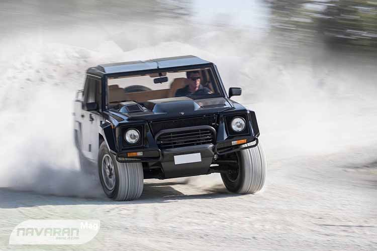دیابلو یکی از القاب شیطان به حساب میآید و ماشین لامبورگینی دیابلو نیز شیطانیترین مدلی
است که از خط تولید این شرکت خارج شده است. دیابلو نخستین مدل این شرکت است که به سرعت 200 مایل بر ساعت
(320 کیلومتر بر ساعت) دست یافت و یک شیطان فوق سریع محسوب میشود.
دیابلو در دهه 1990 میلادی جایگزین مدل محبوب کونتاش شد و با زیبایی خود، افراد بسیاری را تحت تأثیر قرار
داد. لامبورگینی بعدها نسخه قویتری از آن را با نام دیابلو GT به بازار فرستاد که 575 اسب بخار قدرت و
630
نیوتنمتر گشتاور تولید میکرد. دستورالعمل تولید خودرویی با اسب بخار افراطی، به فرمول ثابت ساخت هر
خودرو
لامبورگینی پس از دیابلو تبدیل شد.
معرفی 10 ماشین محبوب کلاسیک
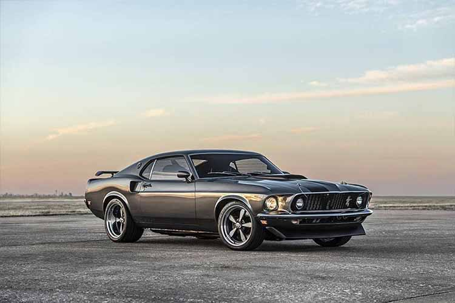ماشین بازها بهخوبی میدانند که یک ماشین کلاسیک را باید جواهری روی چرخ دانست که ارزش آن
هر روز که میگذرد بیشتر میشود. عوامل زیادی در ارزش و محبوبیت یک ماشین کلاسیک دخیل هستند. برخی از این
خودروها به دلیل تعداد محدود تولیدشان محبوبیت دارند و اغلب آنها دارای قیمتهای نجومی نیز هستند. دسته
دیگری از خودروهای کلاسیک در زمان خود توانسته بودند در مسابقات اتومبیلرانی قهرمان شوند و این برای آنها
یک پیشینه افتخارآمیز به حساب میآید.
بدون شک محبوبترین ماشین های کلاسیک از قاره اروپا و کشور آمریکا هستند؛ درواقع بسیاری از خودروهایی که
امروزه دارای ارزش کلاسیک هستند یا تولید کشور آمریکا هستند یا محصول یکی از کشورهای آلمان، انگلیس و
ایتالیا به حساب میآیند. هنگامی که تصمیم به خرید یک خودروی کلاسیک میگیرید باید جوانب مختلفی را در نظر
داشته باشید از جمله اینکه آیا توانایی تقبل هزینه نگهداری و تأمین قطعات این خودروها را دارید یا خیر؟
همچنین آیا خودروی کلاسیک را به منظور استفاده کردن خریداری میکنید یا به عنوان سرمایهگذاری مادی؟ در
ادامه این مطلب از مجله سایت اجاره خودرو ناواران میخواهیم به شما ۱۰ ماشین کلاسیک محبوب را معرفی کنیم
که
کمتر ماشین بازی نسبت به آنها بیعلاقه است!
1. اولین ماشین کلاسیک، پورشه ۹۴۴
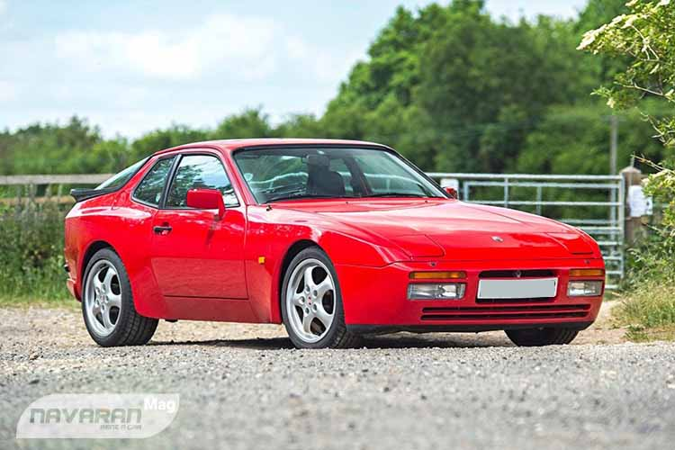پورشه را همه به خاطر تولید مدل موتور عقب ۹۱۱ میشناسند پس اگر پورشهای داشته باشیم که
موتور آن در جلو قرار گرفته باشد بی شک با خودروی خاص طرف هستیم. اولین پورشه موتور جلو که به ماشینهای
متداول شباهت داشت مدل ۹۲۴ بود که در سال ۱۹۷۶ معرفی شد. پورشه دو سال بعد مدل بعدی این خودرو با نام ۹۲۸
را
معرفی کرد و سرانجام در سال ۱۹۸۲ مدل ۹۴۴ معرفی شد.
در بین خودروهای موتور جلوی پورشه، ۹۴۴ اسپرتترین آنها تا آن زمان بود و با موتور ۲.۵ لیتری چهار سیلندر
خود که ۱۸۷ اسب بخار قدرت داشت توانست توجه بسیاری از ماشین بازها را به خود جلب کند. مجله کار اند درایور
در آن زمان اعلام کرد پورشه ۹۴۴ بهترین هندلینگ را در بین خودروهای عرضه شده در بازار آمریکا دارد. پورشه
۹۴۴ امروزه خودرویی محبوب در بین علاقهمندان به ماشین کلاسیک است؛ به خصوص که با قیمتی زیر ۱۰ هزار دلار،
بسیار معقولتر از ۹۱۱ های کلاسیک با قیمت نجومی است.
۲. آلفارومئو اسپایدر، ماشین کلاسیک جذاب ایتالیایی
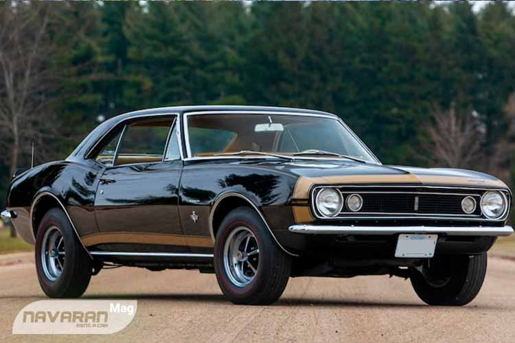آلفارومئو اسپایدر یکی از خاصترین و پر طرفدارترین خودروهای اسپرت کلاسیک ایتالیایی است. بسیاری از ماشین دوستان پوسترهای این رودستر زیبای ایتالیایی را روی دیوار اتاق خود دارند و جذابیت آن را با محصولات فراری مقایسه میکنند. این در حالی است که امروز میتوانید با کمتر از ۲۰ هزار دلار صاحب یک اسپایدر در آمریکا شوید. آلفارومئو اسپایدر که در سال ۱۹۷۳ تولید میشد مجهز به موتور ۲ لیتری چهار سیلندر مجهز به دو میل سوپاپ بود که میتوانست ۱۲۹ اسب بخار قدرت تولید کند. گرچه قدرت این ماشین کلاسیک چندان زیاد به نظر نمیرسد، اما رانندگی با اسپایدر لذت فوقالعادهای به همراه دارد.
۳. شورولت کامارو ۱۹۶۷
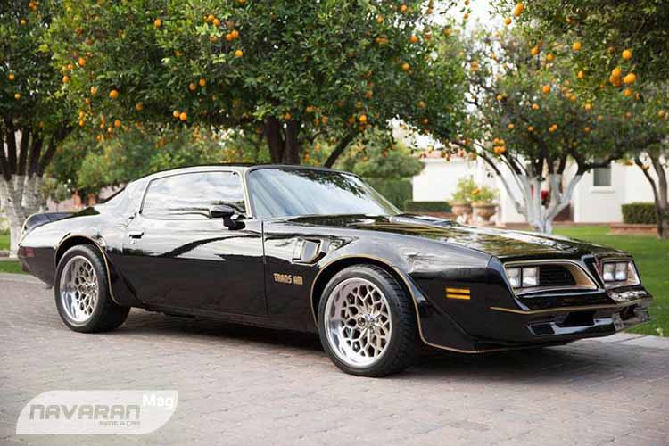گرچه شورولت مسئولیت رقابت با فورد موستانگ را در ابتدا بر عهده مدل Corvair گذاشته بود،
اما
خیلی زود کامارو این نقش را بر عهده گرفت تا به عنوان اصلیترین ماسل کار شورولت به مصاف فورد موستانگ
برود.
شورولت کامارو اولین بار در سال ۱۹۶۷ معرفی شد و مدل اولیه آن به موتور ۳.۸ لیتری شش سیلندر خطی مجهز بود.
محبوبترین مدل کامارو مدل SS است که در سال ۱۹۶۹ به بازار آمد. نسخه دیگر این ماشین کلاسیک که طرفداران
فراوانی دارد، مدل Z28 است که در بازار کشورمان نیز عرضه شده بود و امروز بسیاری از ماشین بازها به دنبال
نسخههای تمیز و سالم آن هستند. مدل Z29 نیز در سال ۱۹۶۹ به عنوان یک خودروی مسابقهای و با موتور هشت
سیلندر ۲۹۰ اسب بخاری معرفی شده بود. این ماشین کلاسیک نسخههایی با قدرت ۴۳۰ اسب بخار نیز دارد که مخصوص
مسابقات درگ ساخته شده بودند و COPO کامارو نام دارند.
۴. پونتیاک فایربرد ترنس ام
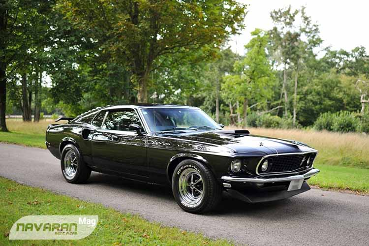پونتیاک فایربرد ترنس ام از آن خودروهای کلاسیکی است که نسخههای متنوع و زیادی دارد و همین
میتواند خریداران این خودرو را مقداری سردرگم کند. البته تنوع نسخههای ترنس ام در بازار ایران کمتر است
و
خریداران این مدل کار راحتتری در پیش دارند.
پونتیاک ترنس ام زمانی که در سال ۱۹۷۳ معرفی شد، دارای طراحی مدرنی بود اما چشمگیرترین بخش ظاهری این
ماشین
کلاسیک را باید نقش روی کاپوت آن دانست. قویترین نسخه پونتیاک فایربرد ترنس ام ۳۱۰ اسب بخار قدرت داشت،
اما
در مدلهای ۱۹۷۷ مدل ۶.۶ لیتری هشت سیلندر خورجینی این خودرو تنها حدود ۲۰۰ اسب بخار تولید میکرد که دلیل
اصلی آن تغییر استانداردهای آلایندگی بود. با این وجود فایربرد ترنس ام به خاطر طراحی چشمنواز خود در
تمامی مدلها از پرطرفدارترین و برترین خودروهای کلاسیک آمریکایی است.
۵. موستانگ، معروفترین ماشین کلاسیک خوش صدا
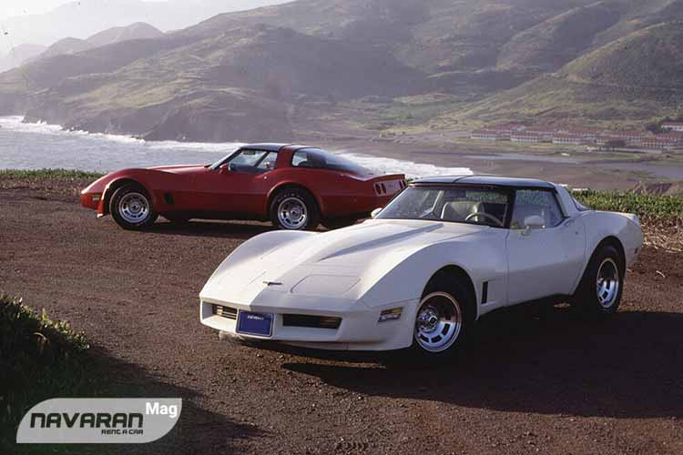موستانگ را باید معروفترین و محبوبترین ماشین کلاسیک فورد به حساب آورد و اگر آن را معروفترین ماسل
کار
جهان نیز بنامیم اغراق نکردهایم. کمتر خودرویی در جهان وجود دارد که تاریخچه آن به اندازه موستانگ قوی
باشد. یکی از پرطرفدارترین نسخههای موستانگ مدل Boss 429 است که در ابتدا برای مسابقات ناسکار طراحی شد،
اما بیش از آنکه در ناسکار محبوبیت پیدا کند در مسابقات خیابانی برای خود شهرت دست و پا کرد.
فورد موستانگ به دلیل ترتیب احتراق خاصی که موتور هشت سیلندر آن دارد صدایی بسیار جذاب و پرطنین تولید
میکند. موتور هشت سیلندر Boss 429 میتواند ۳۷۵ اسب بخار قدرت تولید کند که برای رقابت با بسیاری از
خودروهای اسپرت امروزی نیز کافی است.
۶. شورولت کوروت
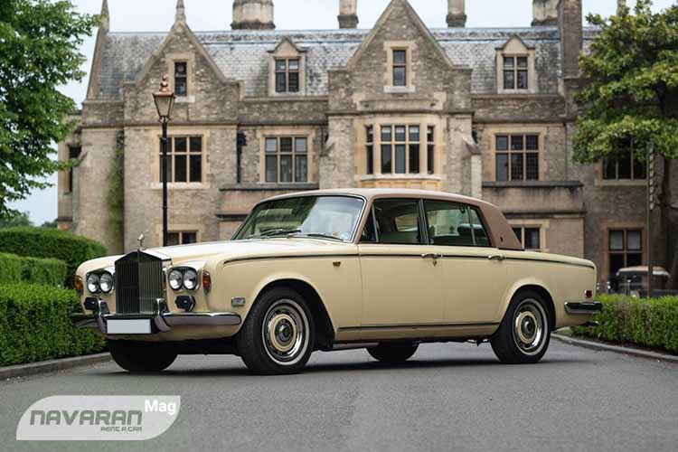شورولت کوروت بیشتر یک خودروی سوپر اسپرت است تا یک ماسل کار، اما برخی از کلاسیک بازها این
خودروی محبوب و زیبای آمریکایی را جزو ماسل کارها طبقهبندی میکنند. نسل سوم شورولت کوروت با کد C3
محبوبترین کوروت کلاسیک است و پرطرفدارترین نسخه آن را باید مدل ZL1 با موتور ۴۳۰ اسب بخاری دانست.
شورولت
کوروت C3 به باور خیلی از ماشین بازها زیباترین نسخه شورولت کوروت است.
تولید این ماشین کلاسیک در سال ۱۹۶۹ شروع شد و تا سال ۱۹۸۲ ادامه پیدا کرد. امروزه مدلهای ۸۱ آن را
میتواند با کمتر از ۱۵ هزار دلار آمریکا خریداری کرد. البته با چنین قیمتی نمیتوانید نسخههای قوی این
خودرو را خریداری کنید و بیشتر مدل هشت سیلندر ۱۹۰ اسب بخاری را میتوانید گیر بیاورید. با این وجود جای
نگرانی در مورد قدرت موتور شورولت کوروت وجود ندارد چون شرکتهای بسیاری در آمریکا برای این خودرو کیتهای
ارتقا و تقویت موتور تولید میکنند.
معرفی خودرو های شاسی بلند
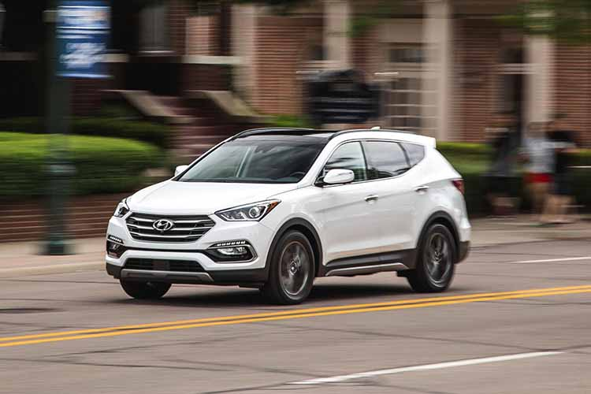همه میدانیم که خودروهای شاسی بلند یا SUV، سلاطین حال حاضر بازار خودرو ایران و جهان
هستند.
حرف U در نام این خودروها به کلمه Utility اشاره دارد که معنای آن «چندمنظوره بودن» یا «کاربردی بودن در
تمامی اوقات» است. بخشی از مفهوم چندمنظوره بودن به تعداد صندلیهای یک خودرو اشاره میکند. برای مثال یک
شاسی بلند 7 نفره به خوبی میتواند مفهوم کاربردی بودن را برای مشتری به تصویر بکشد.
شاسی بلند 7 نفره خودرویی است که عمدتا برای پاسخگویی به نیازهای خانوادههای پرجمعیت طراحی و تولید شده
است. یک شاسی بلند هفت نفره ظرفیت پنج سرنشین بزرگسال، دو سرنشین خردسال و چمدانهای آنها را دارد. در
نتیجه خودرویی مناسب برای یک سفر محسوب میشود. در این مقاله از مجله خودرو ناواران، به بررسی بهترین
شاسیبلندهای 7 نفره بازار ایران خواهیم پرداخت که برخی از آنها توسط این موسسه در اختیار مشتریان قرار
داده شدهاند.
کیا سورنتو، برادر خوش قیافه سانتافه
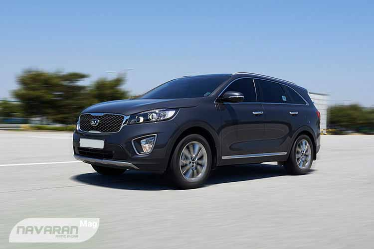کیا سورنتو یک شاسی بلند 7 نفره دیگر بازار ایران است که از نظر شهرت و محبوبیت، با برادر
خود
هیوندای سانتافه برابری میکند. واردات کیا سورنتو در مقایسه با هیوندای سانتافه بسیار محدود بود. با این
حال به دلیل چهره شبه آمریکایی و ارزش بیشتری که مشتریان برای برند کیا قائل هستند، کیا سورنتو توانست
فروش
موفقی را در ایران تجربه کند. اکثر نسخههای وارد شده از سانتافه در ایران به موتور MPi یا تزریق
غیرمستقیم
سوخت مجهز هستند. در سوی دیگر کیا سورنتو از موتور GDi یا تزریق مستقیم بهره میبرد که راندمان بالاتری
نسبت
به حالت عادی دارد اما در سوی دیگر برای سوخت آن بایستی از بنزین سوپر استفاده کنید.
آخرین نسل وارد شده از کیا سورنتو به ایران، نسل سوم این خودرو است که با کد اتاق UM شناخته میشود.
واردات
این خودرو در فاصله سالهای 2015 تا 2017 انجام شد. نسخههای وارد شده از این خودرو به ایران، در قالب دو
تیپ ساده و GT لاین به دست مشتریان رسیدند. نسخههای GT لاین آپشنهای بیشتری را در اختیار خریدار قرار
میدادند. برخی از این آپشنها عبارتند از گرمکن و سردکن صندلیهای جلو، سانروف و سقف پانوراما، سیستم
صوتی
اینفینیتی، صندوق برقی، هفت کیسه هوا، اتوپارک، ترمز پارک برقی، نمایشگر بزرگتر و دوربین 360 درجه.
از نظر ابعاد و اندازه، تفاوتی میان کیا سورنتو و هیوندای سانتافه وجود ندارد. در نتیجه صندلیهای ردیف
سوم
سورنتو همچنان برای افراد کوتاه قامت و کودکان مناسب هستند. کیا سورنتو یکی از خودروهای موجود در ناواران
است. در نتیجه میتوانید برای اجاره خودرو از نوع شاسی بلند 7 نفره اقدام کنید و یک کیا سورنتو کمکارکرد
را
از ناواران تحویل بگیرید.
سانگ یانگ رکستون G4، شاسی بلند 7 نفره آفرودی
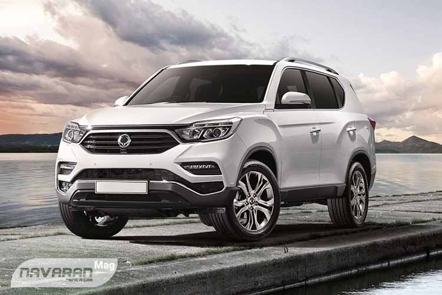تمامی خودروهایی که تاکنون در لیست بهترین شاسیبلندهای 7 نفره بازار مورد بررسی قرار
گرفتند،
خودروهای شهری محسوب میشوند. هیوندای سانتافه و کیا سورنتو چندان برای آفرود قابل اعتماد نیستند و
فیدلیتی
نیز یک کراساوور تک دیفرانسیل است و قابلیت آفرود ندارد. در نتیجه برای مشتریانی که به دنبال یک شاسی
بلند
7 نفره آفرودی هستند، گزینهای بهتر از سانگ یانگ رکستون G4 وجود ندارد.
سانگ یانگ رکستون G4 یکی از آخرین خودروهای وارد شده به بازار ایران است که در سال 97 به مشتریان معرفی
شد.
سانگ یانگ رکستون G4 علاوهبر آنکه یک شاسی بلند 7 نفره با قابلیت آفرود است، بزرگترین رینگها را در بین
خودروهای همکلاس خود دارد. رینگهای این خودرو 20 اینچی هستند و به همین دلیل ارتفاع خودرو از سطح زمین
قابل توجه است. قسمت بار این خودرو نیز در صورت تا کردن صندلیهای ردیف سوم، حجم مناسبی را در اختیار
کاربران قرار میدهد.
طراحان سانگ یانگ رکستون G4 بخش عمدهای از فضای بار را در نسخه هفت نفره محدود کردهاند تا در ازای آن،
سرنشینان ردیف سوم فضای بیشتری را در اختیار داشته باشند. در نتیجه ردیف سوم صندلیهای سانگ یانگ رکستون
G4
مشکلات معمول شاسیبلندهای 7 نفره بازار را ندارد. بزرگترین نقطهضعف سانگ یانگ رکستون G4 در مقایسه با
رقبا، عرضه محدود و دسترسی سخت به خدمات در تمامی نقاط کشور است.
ولوو XC90
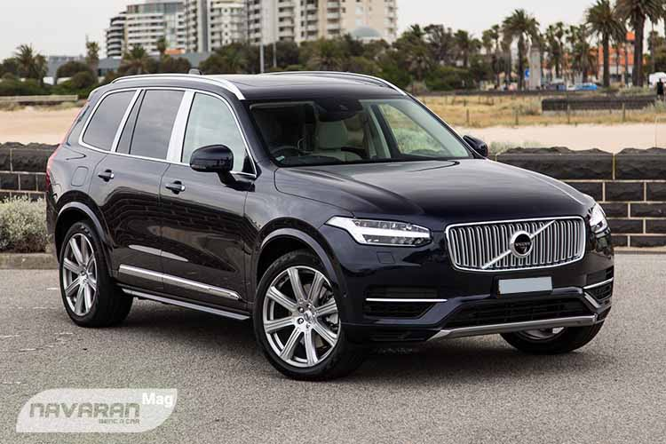ولوو XC90 یک شاسی بلند 7 نفره لوکس است که بزرگترین شاسیبلند کمپانی سوئدی ولوو نیز به
حساب میآید. این خودرو در سال ۲۰۱۶ و در سه تیپ Momentum، R-Design و Inscription وارد بازار ایران شد و
توانست در ابتدای ورود خود به بازار داخلی فروش نسبتا موفقی را تجربه کند.
درون سینه Volvo XC90 یک پیشرانه 4 سیلندر ۱۹۶۹ سیسی قرار داده شده که به لطف بهرهگیری همزمان از سیستم
توربوشارژر و سوپرشارژر، توان تولید 320 اسب بخار قدرت و 400 نیوتنمتر گشتاور را دارد. کمپانی ولوو برای
اینکه بتواند توان خروجی موتور کمحجم این شاسی بلند 7 نفره را به حداکثر حالت ممکن برساند، از یک گیربکس
۸
سرعته اتوماتیک از نوع GearTronic استفاده کرده است.
فضای کابین XC90 بسیار لوکس بوده و از متریالی همچون چرم ناپا و چوب گردو طبیعی برای ساخت اجزای داخلی آن
استفاده شده است. البته در نسخه R-Design، برای اینکه حال و هوای اسپرتتری در کابین ایجاد شود از فیبر
کربن
و آلومینیوم پولیششده استفاده شده است که بسیار هم جذاب است. از میان سه تیپ ولوو XC90 موجود در بازار
کشور، تیپ اینسکریپشن (Inscription) نمونه فول این خودرو محسوب میشود و در مقایسه با سایر تیپها از
امکانات بیشتری برخوردار است که از میان آنها میتوان به سیستم پخش Bowers & Wilkins با 19 اسپیکر 1400
واتی، تنظیمات 12 حالته برقی و مموری 3 حالته برای راننده، سنسور خوابآلودگی راننده، رادار نقطه کور،
رادار
تغییرلاین، رادار تصادف جلو و عقب، رادار تابلوخوان، سنسور تشخیص عابر پیاده و دوچرخهسوار و درایو مد 4
حالته (کامفرت - اکو - داینامیک - آفرود) اشاره کرد.
تویوتا لندکروزر J200
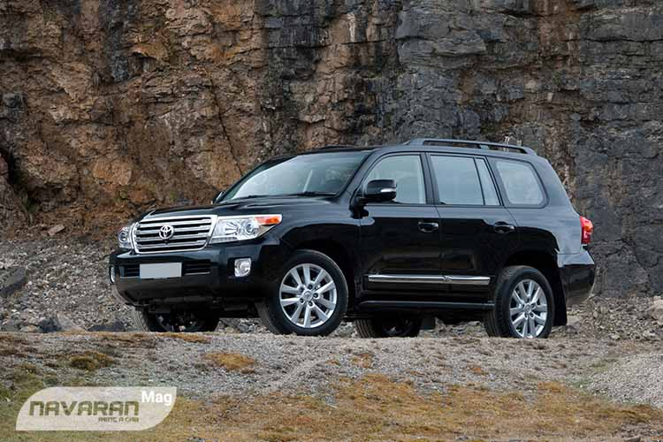تویوتا لندکروزر یکی دیگر از خودروهای بسیار محبوب موجود در لیست بهترین شاسی بلند 7 نفره
بازار است که از تواناییهای آفرودی بسیار مطلوبی بهره میبرد. این شاسی بلند ژاپنی که در میان
علاقهمندان
خود با نام «حضرت» شناخته میشود، از بازار دست دوم بسیار پررونق، کیفیت ساخت بالا، کابین جادار و سیستم
تعلیق کارآمدی برخوردار است و یکی از بهترین انتخابها جهت مسافرتهای خانوادگی به شمار میرود.
اغلب تویوتا لندکروزهای جی ۲۰۰ موجود در بازار ما از پیشرانه ۶ سیلندر ۴ لیتری به قدرت ۲۷۱ اسببخار و
گشتاور ۳۸۵ نیوتنمتر برخوردار هستند و این میزان نیرو توسط گیربکس ۵ دنده اتوماتیک به تمامی چرخها منتقل
میشود. شتاب ۰ تا ۱۰۰ این خودروی ۲۴۵۰ کیلوگرمی حدود ۱۱ ثانیه ارزیابی شده و حداکثر سرعت آن نیز به ۲۰۰
کیلومتر بر ساعت میرسد.
با وجود اینکه آپشنهای تویوتا لندکروزر نسبت به محصولات کرهای چندان چشمگیر نیست، اما میتوان موارد
قابل
قبولی همچون مانیتور عقب ۸ اینچی، مانیتورهای سقفی، سانروف، تهویه اتوماتیک دوگانه، صندلی راننده برقی،
گرمکن و سردکن صندلیها (در نسخه فول آپشن)، ۶ کیسه هوا، درب صندوق برقی، آینههای جانبی تاشونده برقی،
تنظیم ارتفاع نور اتوماتیک، دوربینهای ۳۶۰، کروز کنترل و وینچ را در لیست آپشنهای لندکروزرهای مربوط به
سالهای ۲۰۱۲ تا ۲۰۱۳ مشاهده کرد.